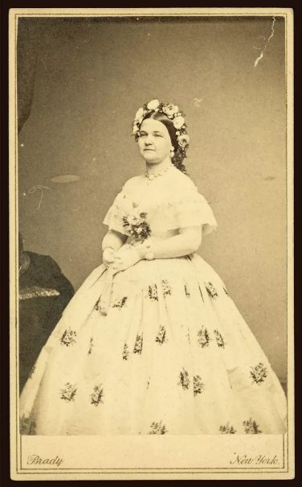
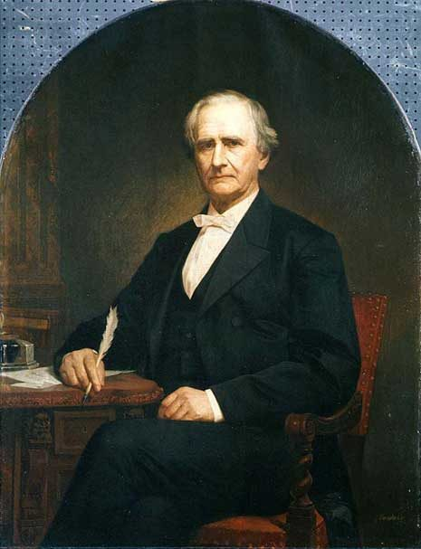

A rediscovered letter in the collection at Elizabeth Furnace reveals a quiet act of generosity: Lebanon's George Dawson Coleman, moved by an appeal from an old political friend, once offered a small fortune to help the widow of a slain president.
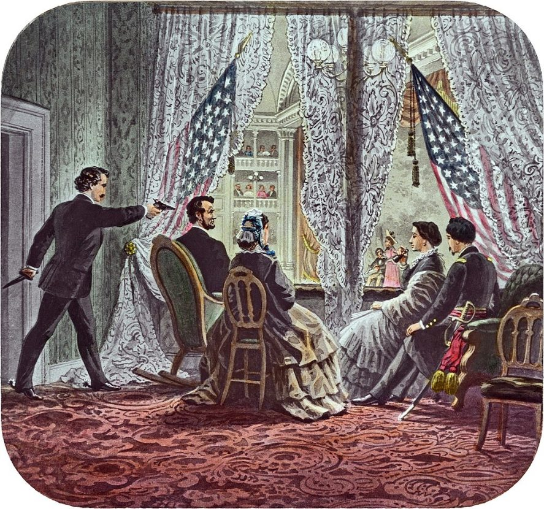
When Abraham Lincoln was assassinated in April 1865, he left behind no pension, no formal provision, and an estate that would take years to settle. Mary Todd Lincoln, suddenly a widow with two surviving sons, found herself in genuine financial anxiety — despite an estate that, once properly valued by Judge David Davis, amounted to some $110,000, worth roughly $2 million today.
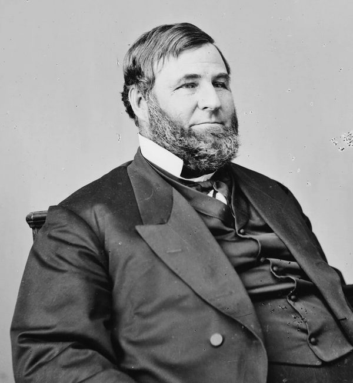
But estate settlement took time, and Mary's own anxious temperament, compounded by grief, convinced her she was on the brink of poverty. She turned to old friends and political allies for help — among them, Pennsylvania's Simon Cameron.
Simon Cameron (1799–1889)
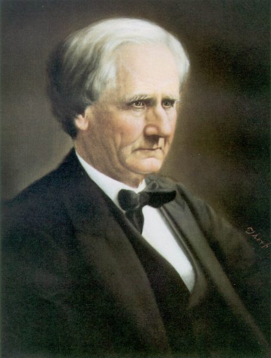
Cameron, the powerful Pennsylvania political boss, had served briefly as Lincoln's first Secretary of War before being eased out amid corruption allegations and dispatched instead as minister to Russia. Despite the awkward end to his cabinet tenure, Cameron and the Lincolns remained on cordial terms, and he retained enormous influence throughout Pennsylvania's business and political circles — including with Lebanon County's iron dynasty.
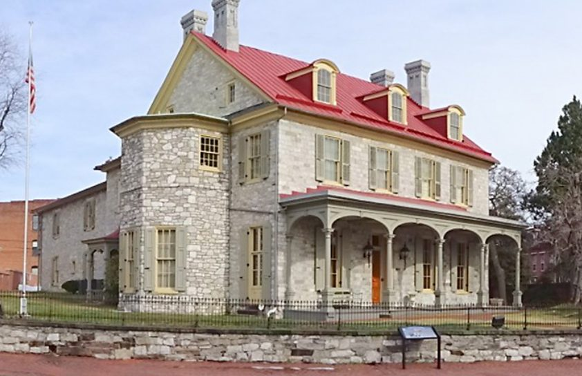
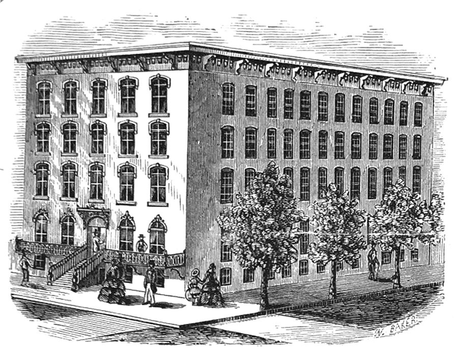
Mary Seeks Cameron's Assistance
In early 1866, not yet a year widowed, Mary wrote to Cameron describing her circumstances in dire terms — the "destitute condition" of herself and her sons, and pleading for whatever assistance his considerable network might provide.
Cameron, whether from genuine sympathy, political calculation, or some mixture of both, took up her cause and began writing to friends and associates across Pennsylvania, soliciting contributions on Mary's behalf.
George Dawson Coleman Responds
Cameron contacted friends among his many political connections explaining the plight of the wife and children of the nation's beloved president.
Though most declined to lend assistance, a few friends rose to the occasion; one who stepped up was George Dawson Coleman. His letter below concludes with wishes that more would be raised than "the amount mentioned."
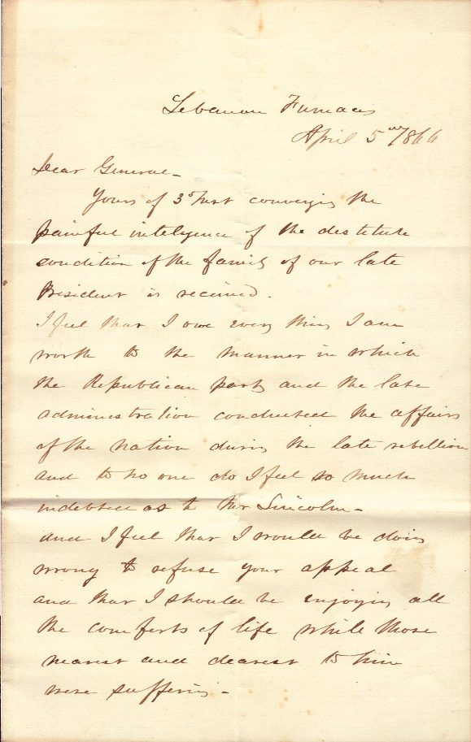
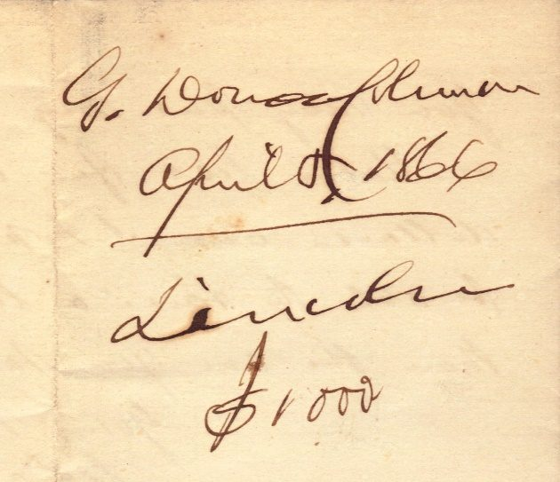
Yours of 3 Mar conveying the painful intelligence of the destitute condition of the family of our late President is received.
I feel that I owe every thing I am worth to the manner in which the Republican party and the late administration conducted the affairs of the nation during the late rebellion and to no one do I feel so much indebtedness as to Mr. Lincoln.
And I feel that I would be doing wrong to refuse your appeal and that I should be enjoying all the comforts of life while those nearest and dearest to him were suffering.
You may put my name down on your list for one thousand dollars, and I hope you will be able to raise a larger sum than the one you mention.
Yours truly, G. Dawson Coleman" April 5, 1866
Coleman's Gratitude
Coleman appreciated Lincoln's administration for personal reasons as well as how the "affairs of the nation" had been conducted.
A letter from Abraham Lincoln, found in the Coleman mansion during its demolition in 1961, as published previously on LebTown, appointed Coleman as commissioner, representing the United States at Great Britain's 1862 Exposition of the Industry of All Nations. The exposition followed on the heels of Prince Albert's original Great Exposition of 1851 and was planned to surpass the 1855 Paris Exposition.
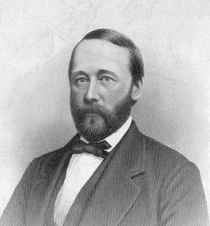
Coleman would again represent the United States in 1873 at the Vienna World's Fair, appointed by his friend Ulysses S. Grant.
Coleman and Cameron
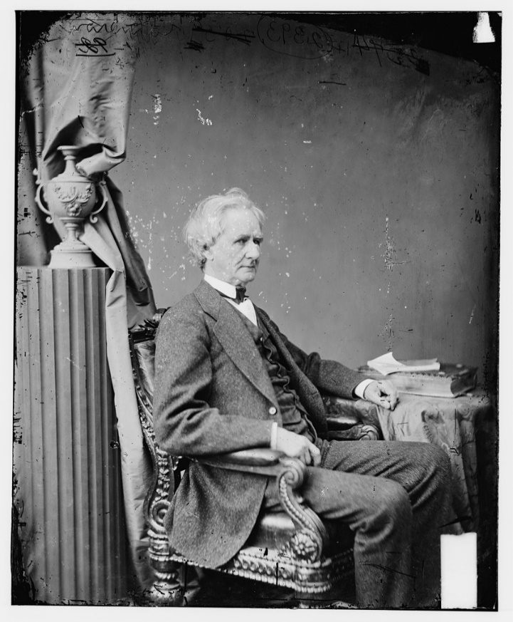
Coleman and Cameron remained long-time friends. Most correspondences were of a social nature. Simon expressed condolences to Deborah Brown Coleman upon her husband George's passing in 1878. He remained a family friend for another decade until his own death in 1889, including helping to sponsor son Bertram Dawson Coleman on a world-wide trip, providing letters of introduction on his behalf to several foreign ministers.
One letter in 1861 between George and brother Robert Coleman (then in France) discussed the possibility of acquiring Cameron's influence in selling more iron to the government for the war, however there is no "smoking gun" indicating involvement in a Cameron scandal (thank goodness!).
Mary Todd Lincoln's Final Years
Simon Cameron's intentions to help in 1866 were never fully realized. Some responded, but others offered only regrets. He never raised the full amount. Some criticism suggested he was more focused that year on winning his return to the U.S. Senate, and that this seeming act of benevolence was more a matter of gilding his own reputation among supporters.
Later, with Cameron now in the Senate, and thanks to Mary's own lobbying, Congress finally granted the former First Lady a pension of $3,000 a year, in 1870.
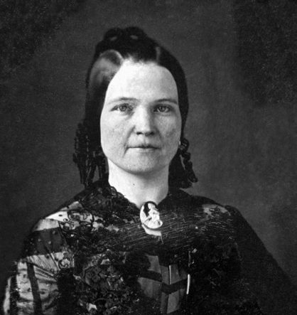
Her final years remained turbulent up to her death at age 63 in 1882. Tad had died in 1871 of tuberculosis. She had lived estranged from her only remaining son Robert, who for a period of time had her committed to an asylum.
There is quite an interesting on-line history of Mary's final years, including surviving the great 1871 Chicago fire just two blocks from Mrs. O'Leary's house.
Carl Sandburg wrote a series of acclaimed biographies of Abraham Lincoln, one winning him a Pulitzer Prize for History. In writing her biography, "Mary Lincoln, Wife and Widow," Sandburg established how Judge Davis had properly filed statements valuing Lincoln's estate at $110,000. Though it would not compare to George Dawson Coleman's millions, such an estate worth $2 million today should have provided for her comfortably.
Unconsolable, she is seen in history crying "poor me!", a starving, destitute and downtrodden woman. Parts of her life were indeed tragic, but possibly Coleman's kindness and benevolence had been misplaced.
Craig Coleman, original documents.
Letters in Chicago historian Philip D. Sang's "Mary Todd Lincoln: A Tragic Portrait," 1961 (open source, Rutgers University Library).
Originally published on LebTown, June 3, 2025.